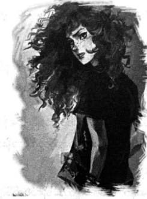

ပြန်ပေးဆွဲခံရသော ဘလက်ဂျက်
နန်းတော်ထဲမှ ပါစီနှင့် အန်နာဘတ်တို့ ပြန်ထွက်လာကြရာ ပန်းခြံထဲတွင် ဟားမီးစ်ကို တွေ့ရသည်။ ရေပန်းမှ ဖြစ်လာသော မြူများထဲရှိ အိုင်းရစ်သတင်းကို ကြည့်နေ၏။
“ဓာတ်လှေကားနားမှာ ပြန်ဆုံရအောင် …”
အန်နာဘတ်က ပါစီကို သေချာကြည့်ရင်း …
“သေချာတယ်နော် … အေးလေ … သေချာပါတယ်”
ပါစီ အနား ရောက်လာသည်အထိ ဟားမီးစ် သတိပြုမိပုံမရ။ အိုင်းရစ်သတင်းထဲမှ ပုံများမှာ အလွန်လျင်မြန်လွန်း လှသဖြင့် တစ်ခုမှ ပါစီ နားမလည်။ တစ်ကမ္ဘာလုံးမှ သတင်းများဖြစ်ကြပြီး တိုက်ဖွန်း ဖျက်ဆီးထားခဲ့သမျှ မြင်ကွင်းများ၊ မန်ဟက်တန်ရှိ တိုက်ပွဲလက်ကျန် အပျက်အစီးများ စသည်ဖြင့် အစုံပင်။
“အံ့ဩစရာပဲ … မြူရဲ့အစွမ်းနဲ့ လူသားတွေရဲ့ လျစ်လျူရှုနိုင်စွမ်းက အံ့မခန်းပဲ … နှစ်သုံးထောင်ရှိပြီ … ခုထိ အံ့ဩနေတုန်းပဲ …”
ထိုစကားကို ဟားမီးစ် ခပ်တိုးတိုး ရေရွတ်နေသည်။
“အင်း … မင်းပါလား … နတ်ဖြစ်မယ့် အခွင့်အရေးကိုတောင် ပယ်ချခဲ့တယ် … ဟုတ်လား …”
“ဒါ အမှန်ကန်ဆုံး ရွေးချယ်မှုပဲ …”
ပါစီ့ကို စိတ်ဝင်တစား ကြည့်နေပြီးမှ အိုင်းရစ်သတင်းများဆီ ဟားမီးစ် ပြန်လှည့်သွား၏။
“ကြည့်ပါလား … တိုက်ဖွန်းကို မုန်တိုင်းကြီးလို့ လူတွေ သတ်မှတ်ထားကြပြီ … မန်ဟက်တန်က ရုပ်တုအကုန်လုံး နေရာမှာမရှိပဲ တချို့ကို အစိတ်စိတ်အမွှာမွှာ ဓားနဲ့ ခုတ်ခံထားရတာ ဘာကြောင့်လဲ မတွေးကြဘူး … တွေးမိလည်း လက်ခံ နိုင်တဲ့ အဖြေတစ်ခုခု ပေးကြဦးမှာပါပဲ”
“မြို့ထဲမှာ အတော်ဆိုးနေလား”
“ဟင့်အင်း … သိပ်မဆိုးလှဘူး … အံ့တော့ အံ့ဩစရာပဲ … လူတွေ အကုန် ကြောက်နေကြတယ် … ဒါပေမဲ့ နယူး ယော့ခ်က လူတွေလောက် ခံနိုင်ရည်ရှိတဲ့လူမျိုး ငါတော့ မတွေ့ဖူးဘူး … ရက်သတ္တပတ် နည်းနည်းကြာရင် ပုံမှန်ပြန်ဖြစ် သွားလိမ့်မယ် … ငါလည်း ဝိုင်းကူညီရမှာပေါ့ ….”
“ဘယ်လို …”
“ငါက နတ်ဘုရားတွေရဲ့ တမန်တော်ပဲ … လူတွေ ဘာပြောနေသလဲ သိဖို့ ငါ့တာဝန်ပဲ … လိုအပ်ရင် အဖြေရှာမရ တဲ့ ကိစ္စတွေကို ငါက ကူပြီး အဖြေရှာပေးလိုက်တယ်… ဒီပြဿနာတွေကို ငလျင်လှုပ်လို့၊ မုန်တိုင်းတိုက်လို့ပဲ သတ်မှတ်ကြ မှာပဲ … အမှန်တရားကလွဲရင် ဘာထင်ထင် ထင်လို့ရတယ် …”
ဟားမီးစ်၏ ပုံစံမှာ ခါးခါးသီးသီး ခံစားနေရပုံပေါ်ပြီး တောင်ဝှေးပေါ်ရှိ ဂျော့ချ် နှင့် မာသာမှာ ထူးထူးခြားခြား တိတ်ဆိတ်နေကြသည်။ ဟားမီးစ် အလွန် ဒေါသထွက်နေခြင်းလည်း ဖြစ်နိုင်၏။ ပါးစပ်ပိတ်ထားသင့်သော်လည်း ပါစီ မနေ နိုင်ဘဲ ပြောမိသည်။
“ကျွန်တော် တောင်းပန်ပါတယ်”
ဟားမီးစ်က သူ့ကို စိတ်ဝင်စားသလို ကြည့်ရင်း …
“ဘာဖြစ်လို့လဲ …”
“ခပ်ဆိုးဆိုး အဖေလို ထင်ခဲ့မိတယ် … လုပ်ခ်ရဲ့ အနာဂတ်ကို ကြိုသိလို့ စွန့်ပစ်ထားပြီး ဘာမှလုပ်မပေးတာလို့ ကျွန်တော် ထင်ခဲ့မိတယ် …”
ဟားမီးစ်က စိတ်ပျက်လက်ပျက်ဖြင့် …
“သူ့အနာဂတ်ကို ငါ သိခဲ့တာပေါ့ …”
“ဒါပေမဲ့ သူ လူဆိုးဖြစ်လာမှာထက် ပိုသိတယ် မဟုတ်လား … နောက်ဆုံးမှာ သူ ဘာလုပ်မယ် ဆိုတာပါ သိတယ် … မှန်ကန်တဲ့ ဆုံးဖြတ်ချက် ချမှာကိုလည်း သိတယ် … ဒါပေမဲ့ သူ့ကို ဘယ်လိုမှ ပြောပြလို့မရဘူး မဟုတ်လား”
ဟားမီးစ်မှာ ရေပန်းကိုသာ ငေးကြည့်နေသည်။
“ကံကြမ္မာကို ဘယ်သူမှ ပြောင်းလဲလို့မရဘူး ပါစီ … နတ်တွေတောင်မှ မပြောင်းလဲနိုင်ဘူး … ဖြစ်လာမယ့် ကိစ္စ တွေကို ကြိုသတိပေးခဲ့ရင် … သူ့ရွေးချယ်မှုကို ဝင်ပါဖို့လုပ်ခဲ့ရင် အကုန် ပိုဆိုးသွားနိုင်တယ် … တိတ်တိတ်နေရတာ သူ့ အနား မနေရတာ … ငါ့အတွက် အခက်ခဲဆုံးကိစ္စပဲ …”
“သူ့လမ်း သူ ရွေးခွင့်ပေးခဲ့ရတယ် … ဒါမှ အိုလံပတ်စ်ကို သူ ကာကွယ်နိုင်မယ် … အဲလို မဟုတ်လား”
ဟားမီးစ်က သက်ပြင်းချလိုက်ရင်း …
“အန်နာဘတ်ကို ငါ စိတ်မဆိုးသင့်ဘူး … အန်နာဘတ် တစ်စိတ်တစ်ပိုင်း ပါတယ် ဆိုတာထိ ငါ သိတယ်… ငါ ထင်တာက ငါမကယ်နိုင်တဲ့ ငါ့သားကို အန်နာဘတ်များ ကယ်နိုင်မလားပေါ့ … သူနဲ့လိုက်သွားဖို့ ငြင်းတော့ ငါ အရမ်း စိတ်ဆိုး မိတယ် … အမှန်ကို မမြင်တာပါလေ … တကယ်က ငါ့ကိုယ်ငါ စိတ်ဆိုးနေခဲ့တာပါ”
“အန်နာဘတ်က လုပ်ခ်ကို ကယ်ခဲ့ပါတယ် … သူရဲကောင်းအဖြစ်နဲ့ သူ သေသွားခဲ့တယ် … သူ့ကိုယ်သူ စတေးပြီး ခရိုနော့စ်ကို သတ်လိုက်နိုင်တယ် ….”
“ခုလို နှစ်သိမ့်တာ ကျေးဇူးတင်တယ် ပါစီ … ဒါပေမဲ့ ခရိုနော့စ် မသေသေးဘူး … တိုက်တန်ကို သတ်လို့ မရနိုင်ဘူး”
“ဒါဆို …”
“ငါလည်း မပြောတတ်ဘူး … ဘယ်သူမှလည်း မပြောနိုင်ဘူး… ပေါက်ကွဲပြီး လေထဲပဲ လွင့်ကုန်သလား … ကံကောင်းရင်တော့ သူ့အသိစိတ် ပြန်စုစည်းဖို့ မဖြစ်နိုင်တော့တာမျိုးထိ ဖြစ်သွားနိုင်တယ် … ထာဝရပေါ့ … ဒါပေမဲ့ ဒါကို သေသွားတယ် လို့တော့ မထင်စေချင်ဘူး ပါစီ …”
ထိုစကားက ပါစီကို စိတ်ဓာတ်ကျစေ၏။
“ကျန်တဲ့ တိုက်တန်တွေကော …”
“ပုန်းနေကြလေရဲ့ … ပရိုမီးသီးယပ်စ်က သူ ဘာကြောင့် ခရိုနော့စ်ကို ထောက်ခံတာပါ ဆိုပြီး ဆင်ခြေတွေ အများကြီး ပေးထားတဲ့စာ ပို့လာတယ် … များများ မပျက်စီးအောင် ဝင်ထိန်းတာပါ … ဘာညာဘာညာပေါ့ … သူသာ တကယ်လည်ရင် ရာစုနှစ် အတော်များများ ပုန်းနေမှာပဲ … ခရီယို့စ် ထွက်ပြေးသွားတယ် … အိုသိုင်ယာ တောင်လည်း ပျက်စီးသွားပြီ … ခရိုနော့စ် ရှုံးပြီဆိုတာနဲ့ အိုရှင်းနပ်စ်လည်း ပင်လယ်နက်ထဲ ပြန်ပြေးသွားပြီ … ဒါပေမဲ့ ငါ့သား လုပ်ခ် ကတော့ သေပြီ … ငါ သူ့ကို ဂရုမစိုက်ဘူးလို့ သတ်မှတ်ရင်း သေခဲ့ပြီ … ငါ့ကိုယ်ငါ လုံးဝ ခွင့်လွှတ်နိုင်မယ် မထင်ဘူး …”
တောင်ဝှေးနှင့် မြူများကို ရိုက်လိုက်လျှင် အိုင်းရစ်သတင်းများ ပျောက် ကွယ်သွားခဲ့သည်။
“ဟိုတုန်းက ကျွန်တော့်ကို ပြောဖူးတယ်လေ … နတ်တွေအတွက် အခက်ခဲဆုံးက ကိုယ့်ကလေး ကိုယ် မကူညီ နိုင်တာပဲဆို … မိသားစုဆိုတာ ဘာကြီးပဲ ဖြစ်နေဖြစ်နေ စွန့်လွှတ်လိုက်လို့ မဖြစ်ဘူးဆို …”
“ငါက အပြောနဲ့ လက်တွေ့ တခြားစီလို့ မင်းက ဆိုလိုချင်တာလား …”
“မဟုတ်ပါဘူး… လုပ်ခ်က အရှင့်ကို ချစ်ခဲ့ပါတယ်… နောက်ဆုံးအချိန်မှာ သူ့ကံကြမ္မာ သူ သိသွားတယ်… ဘာကြောင့် သူ့ကို မကူညီနိုင်သလဲဆိုတာ သိသွားမှာပါ … ဘာအရေးကြီးသလဲ သူလည်း သိသွားခဲ့ပုံပဲ …”
“သူနဲ့ငါ့ အတွက် အရမ်းနောက်ကျသွားပြီပဲ …”
“တခြားကလေးတွေ ရှိသေးတယ်… သူတို့ကို အသိအမှတ်ပြုရင် လုပ်ခ်ကို ဂုဏ်ပြုရာရောက်မယ်… နတ်ဘုရား တွေ အားလုံး ဒီလိုလုပ်နိုင်ပါတယ် …”
ဟားမီးစ် စိတ်ဓာတ်ကျသွားဟန် ရှိသည်။
“သူတို့ ကြိုးစားပါလိမ့်မယ် ပါစီ … အားလုံး ကြိုးစားမှာပါ … ခဏတော့ အရာရာ ပိုကောင်းလာသလို ရှိလိမ့်မယ် … ဒါပေမဲ့ နတ်ဘုရားတွေက ကတိတည်တဲ့သူတွေမှ မဟုတ်တာ… မင်းတို့ မွေးလာတာကိုက ကတိပျက်ခဲ့လို့ ဆိုတာ သတိရဦးလေ … တဖြည်းဖြည်းနဲ့ မေ့ကုန်ကြမှာပဲ … ဒါဖြစ်နေကျကိစ္စပဲ …”
“ပြောင်းလဲလာဖို့လည်း ဖြစ်နိုင်တာပဲ …”
ဟားမီးစ်က အားရပါးတရ ရယ်လိုက်သည်။
“နှစ်သုံးထောင်ကြာခဲ့ပြီ … နတ်ဘုရားတွေရဲ့ အကျင့်ဆိုးတွေကို ပြင်နိုင်မယ်လို့ မင်းက ထင်လို့လား …”
“ဟုတ်တယ် … အဲလိုပဲ ထင်တယ်”
ဟားမီးစ် အံ့ဩသွားဟန်တူသည်။
“ဒါတွေ အကုန်ဖြစ်ခဲ့ပြီးတာတောင် လုပ်ခ်က … ငါ့ကို ချစ်သေးတယ်လို့ မင်းက ထင်သလား …”
“ထင်တာ မဟုတ်ဘူး … သေချာ သိတာ …”
ရေပန်းကို ငေးကြည့်နေရင်းမှ ဟားမီးစ် ပြောလိုက်သည်။
“ငါ့ကလေးတွေရဲ့စာရင်း မင်းကို ပေးလိုက်မယ်… ဝစ်ကွန်ဆင်မှာ ကောင်လေးတစ်ယောက်၊ လော့စ်အိန်ဂျယ်လိစ် မှာ ကောင်မလေးနှစ်ယောက် နောက်ပြီး ရှိသေးတယ် … သူတို့ကို သင်တန်း ခေါ်လာပေးနိုင်မလား”
“ကျွန်တော် ကတိပေးပါတယ် … လုံးဝ မမေ့ပါဘူး”
တောင်ဝှေးကို ရစ်ပတ်နေသော ဂျော့ချ်နှင့် မာသာမှာ ပြုံးရန် ကြိုးစားနေသည်ဟု ပါစီ ထင်၏။
“ပါစီဂျက်ဆန် … မင်းက ငါတို့ကို သင်ခန်းစာတချို့ ပေးနိုင်မယ့်ပုံပဲ …” ဟု ဟားမီးစ်က ဆိုလိုက်သည်။
အိုလံပတ်စ်မှ ထွက်ခွာသည့်ခရီးတွင် ပါစီ့ကို နောက်ထပ် နတ်ဘုရားတစ်ပါးက စောင့်ကြိုလျက် ရှိသည်။ လမ်းလယ်တွင် လက်ပိုက်ရပ်နေသူမှာ အက်သီနာ ဖြစ်ပြီး မျက်နှာ အမူအရာအရ ပါစီ့အတွက် အခြေအနေ မကောင်းလှ။ ချပ်ဝတ်တန်ဆာများ ဝတ်မထားတော့ဘဲ ဂျင်းဘောင်းဘီ အဖြူရောင်အင်္ကျီနှင့် ဖြစ်သော်လည်း ကြောက်စရာ ကောင်းနေဆဲ ဖြစ်သည်။ သူမ၏ မျက်လုံးများမှာ မီးဝင်းဝင်း တောက်နေသလို ထင်ရ၏။
“ပါစီ … မင်းက လူသားဘဝကိုပဲ ရွေးချယ်တယ်ပေါ့”
“အဲ … ဟုတ် …”
“ဘာကြောင့်လဲ သိချင်မိသား …”
ပုံမှန်လူတစ်ယောက်အဖြစ် ကြီးပြင်းချင်လို့ပါ … ပုံမှန်အတိုင်းပဲ တက္ကသိုလ် တက်ကြည့်ချင်တယ်”
“သူ့ကို ကျွန်တော် မခွဲနိုင်ဘူး …”
လည်ချောင်းတစ်ခုလုံး ခြောက်သွေ့လာသလို ခံစားရ၏။
“ထားပါတော့ … မင်းကို ငါ တစ်ချိန်က သတိပေးခဲ့ဖူးတယ် ပါစီဂျက်ဆန် … မင်းက သူငယ်ချင်းအတွက်ဆို ကမ္ဘာကြီးကို ဖျက်မယ့်သူလို့ … ကြည့်ရတာ ငါ မှားသွားသလားပဲ … သူငယ်ချင်းတွေကိုရော ကမ္ဘာကြီးကိုပါ မင်း ကယ်နိုင်ခဲ့တယ် … ဒါပေမဲ့ ဒီအချိန်ကစပြီး ဘာဆက်လုပ်လုပ် သေချာတွေးပါ … ဒီခဏတော့ မင်းကို သံသယရဲ့ အကျိုး ခံစားခွင့် ပေးထားမယ် … ပေါက်ကရတွေ မလုပ်မိစေနဲ့ …”
သူမ၏စကားကို ပိုမိုလေးနက်စေရန် အက်သီနာမှာ မီးတောက်တစ်ခု ဖြစ်ကာ ပျောက်ကွယ်သွားပြီး ပါစီ့ အင်္ကျီ ရင်ဘတ် မီးကျွမ်း ကျန်ရစ်သည်။ ဓာတ်လှေ ကားဝတွင် အန်နာဘတ် စောင့်နေ၏။
“နင် ဘာလို့ မီးခိုးနံ့ နံနေရတာလဲ …”
“ပြောရရင် ဇာတ်လမ်းက အရှည်ကြီးပဲ …”
အောက်ဆုံးထပ်သို့ ပါစီတို့ ဆင်းလာခဲ့ကြသည်။ နှစ်ယောက်လုံး စကားတစ်ခွန်းပင် မပြောမိကြ။ ဓာတ်လှေကား ထဲရှိ သီချင်းသံမှာ ခပ်ဆိုးဆိုးဖြစ်ပြီး နတ်ဘုရားတို့၏ ဓာတ်လှေကားတီးလုံးများ ဘာကြောင့် ညံ့ဖျင်းရသလဲ ပါစီ စဉ်းစား မရ။ ဧည့်ခန်းထဲရောက်လျှင် သူ့နေရာသူ ပြန်ရောက်နေပြီဖြစ်သော ထိပ်ပြောင်ပြောင် လုံခြုံရေးနှင့် စကားများ ငြင်းခုံ နေကြသော အမေနှင့် ပေါလ်ကို တွေ့ရသည်။
“ရှင့်ကို ထပ်ပြောမယ် … အပေါ်ကို တက်မယ် … ကျွန်မရဲ့သား …”
အော်ဟစ်နေရင်းမှ ပါစီ့ကို မြင်လျှင် အမေ မျက်လုံးပြူးသွား၏။
“ပါစီ …”
အားကုန် အဖက်ခံလိုက်ရသဖြင့် ပါစီ အသက်ပင် ရှူမရ။
“အလံအပြာကို မြင်တယ် … ဒါပေမဲ့ သားက ဆင်းမလာဘူး … သားအပေါ် တက်သွားတာ ကြာကြာလှပြီ …”
“မင်းအမေ စိတ်အတော်ပူနေတာ” ဟု ပေါလ်က ဝင်ပြောသည်။ အန်နာဘတ်နှင့် အမေ ဖက်၍ နှုတ်ဆက်နေစဉ် ပါစီ ပြောလိုက်သည်။
“ကျွန်တော် ဘာမှမဖြစ်ဘူး … အားလုံးလည်း အဆင်ပြေသွားပြီ”
အန်နာဘတ်က …
“မစ္စတာ ဘလိုဖစ်က ဓားသိုင်း အတော်ကျွမ်းတာပဲ”
“ဒီလိုပဲ ခုခံရတော့တာပေါ့ … ဒါနဲ့ အထပ်ခြောက်ရာ ဇာတ်လမ်းက တကယ်ပဲလား … ဟိုဟာလေ ..”
“အိုလံပတ်စ်လား … တကယ်ပဲပေါ့ …”
မျက်နှာကြက်ကို မေ့ကြည့်ရင်း ပေါလ်က စိတ်ကူးယဉ်နေဟန်ဖြင့် ...
“တွေ့ဖူးချင်လိုက်တာ …”
“ပေါလ် … အဲဒီနေရာက လူတွေအတွက်မှ မဟုတ်တာ … အရေးကြီးတာ ငါတို့အားလုံး အန္တရာယ်ကင်းဖို့ပဲ မဟုတ်လား” ဟု အမေက ဝင်ပြောလိုက်သည်။
ပါစီ စိတ်အေးလက်အေး ဖြစ်စပြု၏။ အားလုံး အဆင်ပြေသွားပြီး အန်နာဘတ်လည်း ဒဏ်ရာများ ပျောက်သွားပြီ ဖြစ်သည်။ အမေနှင့် ပေါလ်လည်း အန္တရာယ် မရှိခဲ့။ အိုလံပတ်စ်ကိုလည်း ကယ်တင်နိုင်ခဲ့ကြသည်။
သို့သော် နတ်သွေးနှောသူများအတွက် စိတ်အေးလက်အေး ဟူသော စကားမှာ သိပ်အသုံးမကျ။ ထိုအခိုက်မှာပင် လမ်းမဘက်ဆီမှ နီကို ပြေးလာပြီး သူ့မျက်နှာကို မြင်သည်နှင့် တစ်ခုခု လွဲနေပြီဟု ပါစီ သိလိုက်သည်။
“၃၂ လမ်းမှာ ငါ ရေချယ်လ်နဲ့ တွေ့ ခဲ့တယ်”
အန်နာဘတ် မျက်မှောင်ကုတ်သွား၏။
“ဒီတစ်ခါ ဘာလုပ်ပြန်ပြီလဲ”
“သူ ထွက်သွားပြီ … အဲလိုလုပ်ရင် သေလိမ့်မယ်လို့ ငါ ပြောတာလည်း နားမထောင်ဘူး … ဘလက်ဂျက်ကို တက်စီးသွားတော့တာပဲ …”
“ဘယ်လို … ငါ့မြင်းကို ယူသွားတယ် … ဟုတ်လား”
နီကို ခေါင်းညိတ်ပြရင်း ……
“သွေးနှောသင်တန်းကို သွားမှဖြစ်မယ်တဲ့ …”
♦️🌟♦️